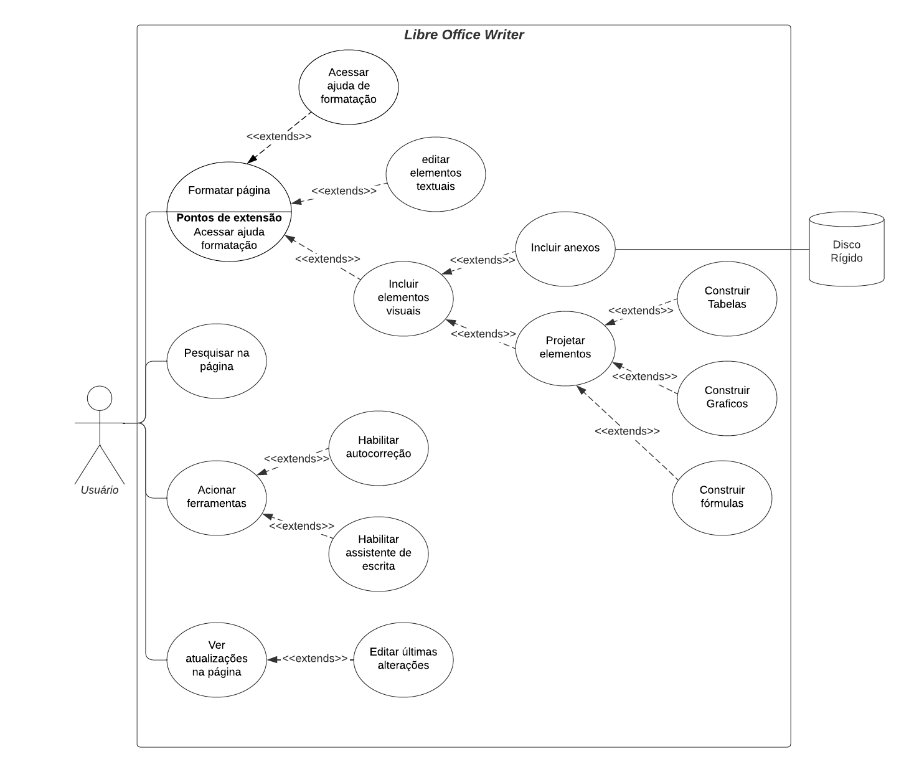

Caso de Uso
Introdução
Após a elicitação de requisitos a partir das técnicas desenvolvidas pela equipe, buscou-se analisar as funcionalidades levantadas e as interações entre os atores do sistema proposto. Nesse contexto, o artefato desenvolvido emprega a metodologia de diagrama de casos de uso, dentro da notação notação UML (Unified Modeling Language), como uma abordagem eficaz para modelar os diferentes cenários de uso de um sistema.
Metodologia
Na Linguagem de Modelagem Unificada (UML), o diagrama de casos de uso efetua a modelagem simplificada das interações (casos de uso) entre os atores e um sistema em desenvolvimento. Sendo responsável por descrever os diferentes cenários de uso de uma aplicação, além de identificar as funcionalidades fornecidas e sua utilização dada pelos atores no ambiente.
A construção de um diagrama pode ser definida por 4 elementos fundamentais para a elaboração e entendimento das funcionalidades e interações no sistema, sendo representados na Tabela 1 subsequente.
| Nome | Função | Elemento |
|---|---|---|
| Ator | Representam um componente externo que interage com os objetos dentro do sistema. Ele pode ser identificado por um usuário, sistema ou outro elemento externo no cenário da aplicação. |  |
| Elipse (Caso de Uso) | Descreve uma ação ou funcionalidade específica que um ator pode realizar dentro do sistema. |  |
| Retângulo (Sistema) | Descreve o sistema proposto, sendo composto por casos de uso e relações no seu cenário interno e atores no seu cenário externo. |  |
| Flecha (Relações) | Representam as relações e interações entre os atores e casos de uso |  |
Tabela 1: Elementos do diagrama de casos de uso (Fonte: Artur Seppa Reiman, 2023).
Nesse contexto, para destacar uma melhor percepção do sistema, as tabelas 2 e 3 buscam representar, a definição das relações assim como as possíveis definições de atores.
| Relação | Descrição |
|---|---|
| include | Indica uma relação entre casos de usos dependentes, no qual o elemento antecessor necessita da execução subsequente do seu sucessor no sistema. |
| extends | Indica uma relação entre casos de usos independentes, no qual o elemento antecessor pode executar ou não o elemento sucessor no sistema. |
Tabela 2: Definição das relações nos casos de uso (Fonte: Artur Seppa Reiman, 2023).
| Ator | Descrição |
|---|---|
| primário | Representa os atores que executam as funcionalidades no sistema, sendo alocados ao lado esquerdo do retângulo |
| secundário | Representa os atores que respondem a alguma funcionalidade executada no sistema, sendo alocados ao lado esquerdo do retângulo |
Tabela 3: Definição dos atores primários e secundários (Fonte: Artur Seppa Reiman, 2023).
Diagrama de Caso de Uso
A construção dos Diagramas de Casos de Uso desenvolvidos e representados nas figuras 1, 2 e 3 e tabelas de 4 a 9, foram elaborados a partir da ferramenta de modelagem Lucichard e seguem como base os requisitos elicitados na seção anterior do projeto.
UC-Acessar Documento
Figura 1: Diagrama de Casos de Uso referentes ao acesso de documentos (Fonte: Artur Seppa Reiman, 2023).
Caso de Uso 1 - Criar novo documento
| UC01 | Informações |
|---|---|
| Descrição | O usuário é capaz de criar novos documentos no sistema |
| Ator | Usuário |
| Pré-condições | Acesso a aplicação |
| Ação | O usuário determina a instanciação de documentos dentre as possíveis formas |
| Fluxo principal |
|
| Fluxo alternativo |
|
| Fluxo de exceção |
|
| Pós-condições | O usuário tem acesso a um novo documento para ser redigido |
| Data de Criação | 22/10/2023 |
| Rastreabilidade | BS01, INT01, BS19 |
Tabela 4: UC 1 - Criar novo documento (Fonte: Artur Seppa Reiman, 2023).
Caso de Uso 2 - Editar documento
| UC02 | Informações |
|---|---|
| Descrição | O usuário é capaz de editar documentos no sistema |
| Ator | Usuário |
| Pré-condições | Acesso a aplicação e acesso aos dispositivos de armazenamento |
| Ação | O usuário determina a edição de documentos |
| Fluxo principal |
|
| Fluxo alternativo |
|
| Fluxo de exceção |
|
| Pós-condições | O usuário pode editar um documento na aplicação |
| Data de Criação | 22/10/2023 |
| Rastreabilidade | BS02, BS21, BS15, INT13 |
Tabela 5: UC 2 - Editar documento (Fonte: Artur Seppa Reiman, 2023).
UC-Transferência de dados
Figura 2: Diagrama de Casos de Uso referentes a transferência de dados (Fonte: Artur Seppa Reiman, 2023).
Caso de Uso 3 - Compartilhar documento
| UC03 | Informações |
|---|---|
| Descrição | O usuário é capaz de compartilhar documentos de diferentes formas |
| Ator | Usuário |
| Pré-condições | Acesso a aplicação e acesso aos dispositivos de compartilhamento |
| Ação | O usuário determina o compartilhamento de arquivos dentre as duas possíveis formas |
| Fluxo principal |
|
| Fluxo alternativo | Não há fluxo alternativo |
| Fluxo de exceção | Fluxo 1: Compartilhar via Email
|
| Pós-condições | O usuário compartilha o documento definido |
| Data de Criação | 22/10/2023 |
| Rastreabilidade | BS15, INT14, BS03, BS03 |
Tabela 6: UC 3 - Compartilhar documento (Fonte: Artur Seppa Reiman, 2023).
Caso de Uso 4 - Exportar documento
| UC04 | Informações |
|---|---|
| Descrição | O usuário é capaz de exportar documentos com diferentes tipos de extensões de arquivo dentro do sistema |
| Ator | Usuário |
| Pré-condições | Acesso a aplicação e acesso aos dispositivos de armazenamento |
| Ação | O usuário determina o tipo de extensão e o local de armazenamento do arquivo a ser exportado |
| Fluxo principal |
|
| Fluxo alternativo | Não há fluxo alternativo |
| Fluxo de exceção | Fluxo 1: Exportação para o Disco Rígido
|
| Pós-condições | O usuário compartilha o documento definido |
| Data de Criação | 22/10/2023 |
| Rastreabilidade | INT14, BS03, BS03 |
Tabela 7: UC 4 - Exportar documento (Fonte: Artur Seppa Reiman, 2023).
Caso de Uso 5 - Salvar documento
| UC05 | Informações |
|---|---|
| Descrição | O usuário é capaz de salvar documentos na extensão padrão odt dentro do sistema |
| Ator | Usuário |
| Pré-condições | Acesso a aplicação e acesso aos dispositivos de armazenamento |
| Ação | O usuário determina o local de armazenamento do arquivo com a sua extensão odt |
| Fluxo principal |
|
| Fluxo alternativo |
|
| Fluxo de exceção | Fluxo 1: Armazenamento em Disco Rígido
|
| Pós-condições | O usuário salva o documento no sistema |
| Data de Criação | 22/10/2023 |
| Rastreabilidade | INT14, BS03, BS03 |
Tabela 8: UC 5 - Salvar documento (Fonte: Artur Seppa Reiman, 2023).
UC-Redigir documento
|  |
|---|
Figura 3: Diagrama de Casos de Uso referentes a produção de documento (Fonte: Artur Seppa Reiman, 2023).
Caso de Uso 6 - Formatar página
| UC06 | Informações |
|---|---|
| Descrição | O usuário é capaz de formatar as páginas do documento |
| Ator | Usuário |
| Pré-condições | Acesso a aplicação e acesso ao dispositivo de armazenamento |
| Ação | O usuário impõe a edição de elementos textuais e visuais no documento |
| Fluxo principal |
|
| Fluxo alternativo |
|
| Fluxo de exceção |
|
| Pós-condições | O usuário formata o documento de acordo com seu interesse |
| Data de Criação | 22/10/2023 |
| Rastreabilidade | BS05, BS06, BS07, INT02, INT03, INT04, INT05, INT06, INT07, INT08, INT09 |
Tabela 9: UC 6 - Formatar página (Fonte: Artur Seppa Reiman, 2023).
Caso de Uso 7 - Pesquisar na página
| UC07 | Informações |
|---|---|
| Descrição | O usuário é capaz de pesquisar palavras e textos de interesse no documento |
| Ator | Usuário |
| Pré-condições | Acesso a aplicação |
| Ação | O usuário impõe a pesquisa de palavras e textos no documento |
| Fluxo principal |
|
| Fluxo alternativo |
|
| Fluxo de exceção |
|
| Pós-condições | O usuário localiza o texto de interesse no documento |
| Data de Criação | 22/10/2023 |
| Rastreabilidade | BS20, INT11 |
Tabela 10: UC 7 - Pesquisar na página (Fonte: Artur Seppa Reiman, 2023).
Caso de Uso 8 - Acionar ferramentas
| UC08 | Informações |
|---|---|
| Descrição | O usuário é capaz de acionar as ferramentas de auxilio de escrita no documento |
| Ator | Usuário |
| Pré-condições | Acesso a aplicação |
| Ação | O usuário aciona as ferramentas de auxilio de escrita no sistema |
| Fluxo principal |
|
| Fluxo alternativo | não há fluxo alternativo |
| Fluxo de exceção |
|
| Pós-condições | O usuário aciona ferramentas de escrita no documento |
| Data de Criação | 22/10/2023 |
| Rastreabilidade | BS04, BS18, BS14, BS16, INT10 |
Tabela 11: UC 8 - Acionar ferramentas (Fonte: Artur Seppa Reiman, 2023).
Caso de Uso 9 - Ver atualizações na página
| UC09 | Informações |
|---|---|
| Descrição | O usuário é capaz de ver as atualizações no documento |
| Ator | Usuário |
| Pré-condições | Acesso a aplicação |
| Ação | O usuário verifica as atualizações do documento no sistema |
| Fluxo principal |
|
| Fluxo alternativo | não há fluxo alternativo |
| Fluxo de exceção |
|
| Pós-condições | O usuário verifica e editar as atualizações feitas no sistema |
| Data de Criação | 22/10/2023 |
| Rastreabilidade | INT18 |
Tabela 12: UC 9 - Ver atualizações na página (Fonte: Artur Seppa Reiman, 2023).
Bibliografia
FERNANDO, Sidney. Caso de Uso. Repositório da disciplina de Requisitos de Software da Universidade de Brasília, 2023. Disponível em: https://requisitos-de-software.github.io/2023.1-BilheteriaDigital/modelagem/useCase/. Acesso em: 20 outubro 2023.
Tutorial de Caso de Uso UML. Disponível em: https://www.youtube.com/watch?v=ab6eDdwS3rA. Acesso em: 20 outubro 2023.
Lucidchart. Diagrama de Caso de Uso UML. Disponível em: https://www.lucidchart.com/pages/pt/diagrama-de-caso-de-uso-uml. Acesso em: 20 outubro 2023.
UML DIAGRAMS. Use Case Diagrams. Disponível em: https://www.uml-diagrams.org/use-case-diagrams.html. Acesso em: 20 outubro 2023.
Histórico de Versões
| Versão | Data | Descrição | Autor | Revisor |
|---|---|---|---|---|
| 1.0 | 22/10/2023 | Criação da Página e Incorporação dos seus elementos | Artur Seppa | Ana Luíza |